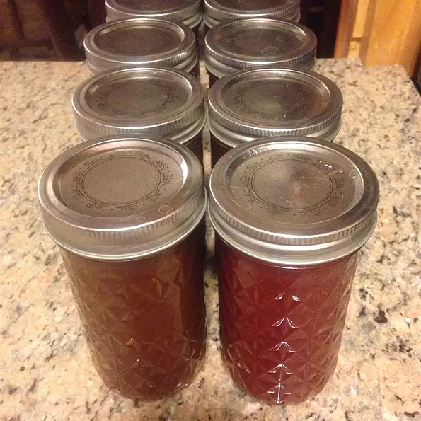

Grape Jelly

Description
This is a short and simple grape jelly recipe.
Ingredients
- 3 cups grape juice
- 5 ¼ cups white sugar
- 1 (2 ounce) package powdered fruit pectin
Steps
- Sterilize and dry jars for jelly, and set side. I like to use my dishwasher. New lids are recommended for best results.
- Combine grape juice and pectin in a large pot over medium-high heat. Bring to a boil, and stir one minute at a rolling boil. Stir in sugar for a few minutes to completely dissolve. Remove from heat.
- Ladle the hot jelly into the jars, leaving 1/2 inch of space at the top. Wipe rims of jars with a clean dry cloth. Cover with a lid and ring to seal. Let stand 24 hours at room temperature, then refrigerate. Jelly may take up to a week to set. Once set, it is ready to serve. Store in the refrigerator for up to three weeks, once set. If canning for long term storage, process in a hot water bath for 10 minutes, or contact your local extension for processing times in your area.n